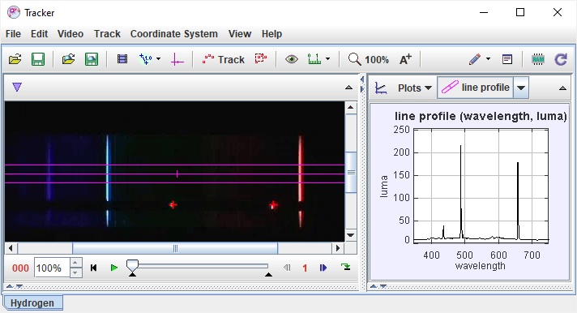

Tracker is a free video analysis and modeling tool from Open Source Physics (OSP). Features include manual and automated object tracking with position, velocity and acceleration overlays and data, video filters, line profiles for analysis of spectra and interference patterns, and dynamic particle models for direct comparison with real-world videos. It is designed to be used in physics education but is also widely used in many other fields.
To start using Tracker, see getting started.